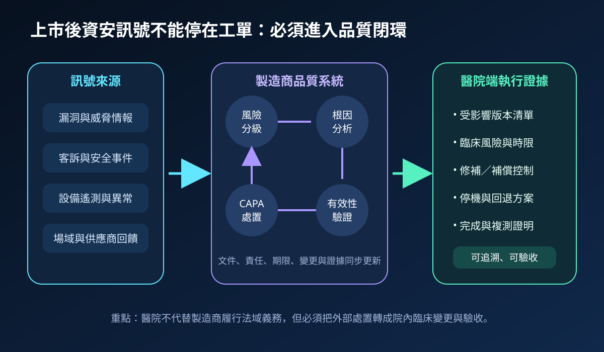
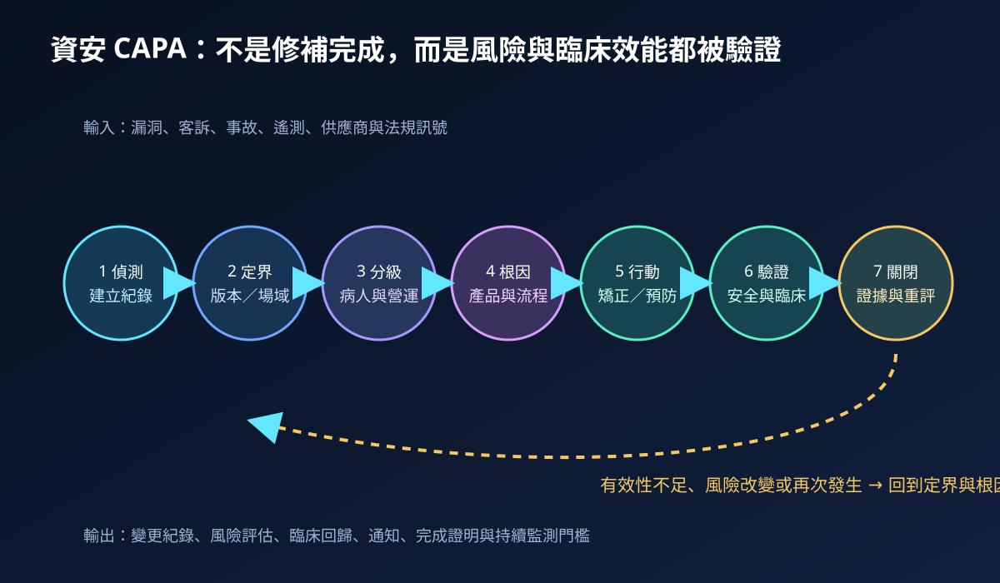
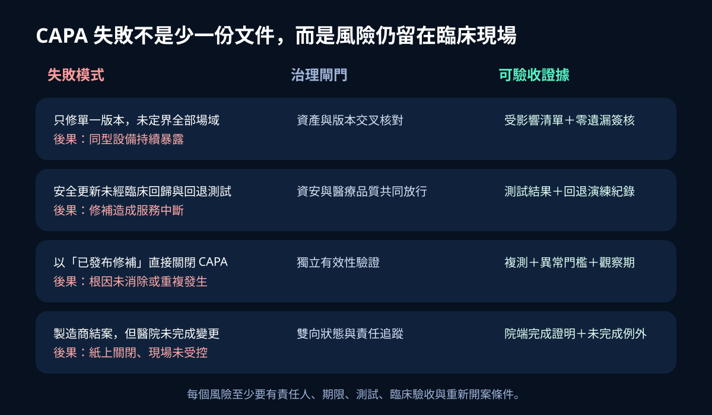

醫療資安國際觀察 · 2026-11-02
醫療設備資安異常如何進入品質系統：從上市後監測到 CAPA 關閉
作者：Dr. William｜醫療資訊與資安治理實務工作者
醫療設備漏洞、異常遙測或場域事件若只停留在客服工單，修補可能完成，根因、臨床影響、通知與有效性卻仍無法關閉；可追溯的品質系統必須把安全訊號轉成 CAPA 與院端驗收證據。
名詞解釋：PMS、CAPA 與有效性驗證
上市後監測（PMS）是產品投入市場後，主動蒐集並分析安全、性能、客訴、事故與趨勢資料；矯正與預防措施（CAPA）用於找出不符合或風險的根因，採取矯正、預防及效果確認；有效性驗證不是確認修補檔已發布，而是證明風險下降、臨床功能未受損、補償控制可運作，且未完成設備仍被追蹤。
國際現況與適用邊界
美國 FDA 於 2026 年 2 月生效的品質管理系統規則（QMSR）納入 ISO 13485:2016，並更新醫療設備製造商的品質系統與查核架構；同月發布的醫療設備資安最終指引，將網路安全風險管理放入產品全生命週期與品質系統。歐盟 MDCG 2025-10 指引則說明 PMS、警戒、趨勢通報與 CAPA 的互動，並要求上市後資訊回饋至風險管理、設計、標示與臨床評估。這些要求分別適用美國與歐盟法域中的製造商及相關經濟營運者，不能直接視為台灣醫院的法定義務。
台灣適用原則：醫院可把國際品質系統邏輯轉成採購、資產、變更、醫療品質與事件管理的共同接口；法定通報、產品責任與主管機關要求仍須依台灣法令、許可證、契約及實際事件判定。
規劃：先定義雙邊責任與驗收門檻
範圍至少涵蓋設備型號、軟體版本、部署位置、臨床用途、網路邊界、供應商、維護者與替代流程。製造商負責產品風險、根因、修補與法域通報；院方由醫工、資訊、資安、醫療品質、採購與臨床單位共同管理場域定界、停機安排、補償控制及放行。指標可包含訊號入案時間、受影響資產定界完成率、高風險處置時效、臨床回歸成功率、未完成例外逾期率與有效性複測通過率。
實作：七階段形成資安 CAPA 閉環
- 偵測與建檔：保留來源、時間、版本、症狀與初步影響。
- 定界：找出受影響產品、版本、場域、資料流與臨床流程。
- 風險分級：同時評估病人安全、資料、營運、利用可能性與可回復性。
- 根因分析：區分產品缺陷、供應鏈元件、部署條件、維運流程與控制失效。
- 矯正與預防：配置修補、組態、隔離、監測、通知、替代流程與長期改善。
- 有效性驗證：完成安全複測、臨床回歸、回退、日誌與異常門檻驗證。
- 證據關閉：確認每個場域完成狀態、例外期限、責任人及重新開案條件。

風險：製造商結案不等於院端風險已關閉
常見失敗包括只修單一版本、沒有臨床回歸、以「修補已發布」取代效果確認，以及製造商完成 CAPA 後院端仍有設備未更新。緩解方式是建立雙向狀態、逐台資產證據、臨床與資安共同放行、獨立觀察期及逾期例外升級；未能安全更新的設備則須保留隔離、存取限制、監測與退場時程。

可執行清單
- 資安漏洞、客訴、事故與設備異常是否進入同一可追溯入口？
- 能否在目標時間內列出全部受影響型號、版本、位置與臨床用途？
- 根因分析是否涵蓋產品、供應鏈、部署與維運流程，而非只描述症狀？
- 修補前是否準備停機、替代流程、回退與補償控制？
- 安全複測與臨床回歸是否由不同角色確認？
- 製造商結案後，院端是否仍追蹤逐台完成、例外與觀察期？
來源
- U.S. FDA｜Quality Management System Regulation—Frequently Asked Questions（更新與生效：2026-02-02；查閱：2026-11-02）
- U.S. FDA｜Cybersecurity in Medical Devices: Quality Management System Considerations and Content of Premarket Submissions（最終指引：2026-02；查閱：2026-11-02）
- European Commission MDCG｜MDCG 2025-10 Guidance on Post-Market Surveillance（發布：2025-12-19；查閱：2026-11-02）
內容說明
本文依健康台灣深耕計畫相關治理內容整理，並參考 FDA 醫療設備資安與品質系統資料、歐盟 MDCG 上市後監測指引，說明安全訊號、CAPA、臨床驗證與證據關閉的連結；不把美國或歐盟要求視為台灣醫療機構的法定義務，也不取代主管機關公告、產品風險評估、醫療品質程序、契約審查或法律意見。